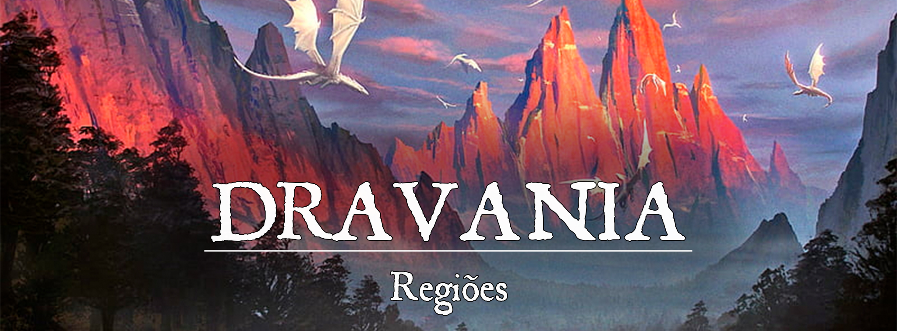

Dravania
“Viva para voar. Voe para viver.”
Descrição
Poucos são aqueles que conseguem desenvolver laços tão intrínsecos com as criaturas dracônicas, quanto os Dravanianos.
Criada por uma família de domadores, Dravania é a pura concepção de mutualismo e sobrevivência.
Sua localidade praticamente obriga que seus moradores e as criaturas dracônicas se auxiliem, tanto na movimentação quanto na subsistência.
Remanescentes dos conflitos entre dragões e gigantes, as criaturas dracônicas de Dravania são a representação mais próxima dos dragões ancestrais, em Gronnemar. Sua distância e dificuldade de alcance por meios não aéreos desenvolve no imaginário popular todo tipo de crendice e misticismo quanto aos cidadãos de Dravania, pelo resto de Gronnemar.
A relação dos moradores de Dravania é tão intima, que muitos dos homanoides ou montam, ou lutam ou caçam junto dos draconianos.
Descrição Visual:
{kind=link}
Dravania é uma cidade de arquitetura simples e de pequeno porte. Situada nos picos da Espinha do Mundo, ela utiliza a própria região como fonte de suas construções. Muitas das casas são feitas da própria montanha, escavando-se alcovas para dentro dela.
Todavia, muitas vigas de suporte de madeira e pedra podem ser vistas pela cidade, para segurar construções e caminhos.
Como é situada nos picos, Dravania tende a ser fria em praticamente todo o ano. Por isso, as casas e construções tem fogueiras centrais para esquentar seus moradores.
Dravania, sendo conhecida por ser uma cidade de subsistência entre humanóides e criaturas dracônicas, necessita de uma infraestrutura para seus moradores mais bestiais. Poleiros, alcovas e pranchas de lançamento são construções comuns.
Normalmente, ao se olhar para os picos da Espinha do Mundo, é possível ver Wyverns e Dragonnels voando ao redor da cidade, quando as nuvens assim permitem. Os que se arriscam a visitar a cidade a pé, se deparam com patrulhas de humanóides, drakes e pseudo-dragões.
Não é incomum, devido à proximidade com as criaturas dracônicas, que os habitantes de Dravania recebam visita de outras criaturas dracônicas de planos próximos, como Dragões-Fadas e Jabberwocks (Embora esses últimos sejam lidados com muito cuidado devido a seu temperamento).
Os viajantes que passam próximo à Espinha do Mundo, na região de Dravania, devem ter cuidado para não adentrarem o território de caça e serem confundidos com presas ou invasores.
Sociedade
População:
Dravania é composta de uma mistura muito grande de raças ligadas às criaturas draconianas. Embora haja uma grande diversidade, os humanos ainda são os mais comuns, seguidos de dragonborns, kobolds e meio-dragões.
Cultura:
A cultura de Dravania é intrinsecamente ligada ao convívio harmônico entre humanóides de criaturas draconianas. Por serem um sociedade relativamente isolada, os vínculos internos cresceram muito mais do que os voltados a estrangeiros.
É costume toda família ter ao menos uma criatura draconiana ao qual eles fazem vínculos quase espirituais. Há ritos para a escolha do “protetor” daquela família, entre os recém-nascidos eclodidos dos ovos. Como uma criatura dracônica geralmente coloca mais de um ovo, suas proles são espalhadas por diversas famílias, criando um sentimento de uma grande e única unidade familiar.
Quem escolhe para qual família vai cada prole é um xamã, cujo título é a Voz do Alto. Esse xamã consulta os espíritos dos dragões do passado daquela linhagem. Nesse transe espiritual, a intuição é enviada ao xamã, que escolhe o destino da nova prole.
As famílias que não tem “protetores” geralmente estão à espera de um novo em decorrência da morte do anterior, ou estão se preparando espiritualmente e sanando algum bloqueio que impede que se vinculem a um novo protetor.
Caráter:
Dravania é uma cidade relativamente pacífica, isolada nos cumes da Espinha do Mundo. Em compensação, não é incomum receber visitantes, intrigados pela relação de mutualismo entre humanóides de criaturas draconianas. Em geral, os Dravanianos são receptivos a estrangeiros de origem draconiana, como os dragonborns e kobolds. Todavia, se mantém desconfiados e cautelosos em relação aos demais, com receio de más-inteções nos corações dos homens.
Datas e Festividades:
O Ritual do Eclodir: A criação da nova vida é um evento sempre prezado e querido pela população de Dravania. O nascimento de um novo “dragão” é motivo de excitação de toda a cidade, pois pelo menos uma família terá um “protetor” novo. Todos aguardam o xamã decidir para qual família necessitada vai a nova prole. Note-se que criar e cuidar dos pequenos dragões e criar o vínculo com eles é função extremamente importante e é levada muito à sério pelo povo de Dravania.
O ritual em si envolve o transe da Voz do Alto, que se comunicará com os antepassados daquela nova prole. Os espíritos dos dragões guiarão o entendimento do xamã na direção da família mais adequada para receber aquela nova vida.
Religião:
Mithyrriel, como a deusa que protege os dragões filhotes, é a mais venerada em Dravania, visto que o nascer de uma nova vida é motivo de grande festividade na pequena cidade. Contudo, o panteão dracônico, no geral, exerce influência na cidade, com altares, ritos e homenagens próprias a cada um.
Economia
Dravania, por ser uma pequena sociedade, é auto suficiente apenas para o mínimo existencial. Os “dragões” alados descem em comitiva, com seus montadores para caçar presas nas florestas ao pé da montanha. No alto, algumas famílias se dedicam à criação de animais com lã, como carneiros e lhamas. Sua lã serve para aquecer a todos durante, principalmente, o inverno. Todavia, o relevo acidentado acaba fazendo com que a carne desses animais se torne mais dura, e menos propícia para o consumo. Por isso, prezam mais pela lã e pelo leite.
Algumas plantações de altitude sobrevivem às condições de frio, na maior parte do ano, mas morrem no inverno. A técnica mais utilizada é a plantação em terraços pela lateral da montanha. Estoque de comida são comuns, principalmente grãos, sementes e carne seca.
Há uma divisão especial dedicada à pesca no lago a norte da região.
Em épocas escassas, Dravania se vê obrigada a realizar escambo ou comércio com as cidades vizinhas, na base da montanha, em especial com os anões de Varturngor.
Os visitantes que vão a Dravania costumam levar presentes e lembranças de suas terras, como sinal de boa fé.
Serviços:
Caso uma pessoa de fora que seja considerada amiga da cidade, os Dravanianos, além de os recebem de braços abertos, podem oferecer traslado com suas criaturas voadoras pra facilitar a travessia da montanha.
Governo
O líder de Dravania recebe o título de Sangue de Wyrm. Quando um líder morre, perde ou abdica de seu poder, os Xamãs Voz do Alto e as demais famílias buscam esclarecimento através de uma estátua representativa de Mithyrriel, esculpida da própria rocha da montanha. Lá, são conduzidos diversos rituais onde os pretendentes a Sangue de Wyrm apresentam suas propostas e seus apelos à Protetora.
Ao final, um dos Xamãs, possuído pela Vontade de Mithyrriel, nomeia o próximo Sangue de Wyrm, cujo mandato é vitalício.
Poderio Militar:
Dravania não tem um exército propriamente dito. A defesa e proteção da cidade é feita pelos próprios moradores que, em suas divisões de atribuições, delegam função de guarda para alguns mais aptos.
Todavia, Dravania conta com grupos especializados de Montadores de Drakes, que fazem tanto as patrulhas aéreas quanto as patrulhas terrestres ao redor da cidade
Conflito
O território de caça dos drakes de Dravania coincide com o território de um círculo druídico, nas florestas próximas do sopé da montanha. Por isso, é comum que os druidas sejam hostis com os Dravanianos, gerando tensões entre os dois grupos. Agressões físicas, muitas vezes são a forma de resolução dos conflitos territoriais, mas nunca definitivos.
Eventualmente, algum membro de um dos grupos perece nesses conflitos, inflamando ainda mais a rixa entre Dravania e os Druidas.
Como se não fosse o suficiente, caçadores das terras baixas, ao verem um Drake sozinho, podem atacar para conseguir fama, renome e materiais extraídos do corpo das criaturas. Os montadores não perdoam ataques covardes e retaliam com a devida agressividade.
Internamente, alguns cidadãos duvidam da capacidade e da moral do atual Sangue de Wyrm, Aleister, que, de uma forma duvidosa, foi apontado pela Voz do Alto.
Organizações Relevantes
Grupo de Pesca Aérea: Por estarem muito próximos ao lago, parte das criaturas draconianas e seus tutores se focam na pesca, como forma de suprir a necessidade dos moradores de Dravania. Se dividem em dois grupos principais: Os que pescam com varas na beira do lago e os que se aventuram mais para águas profundas, utilizando a técnica de mergulho das criaturas draconianas e arpões de seus tutores.
Voz do Alto: Grupo de Xamãs de importância social e religiosa. São responsáveis por acompanhar o nascimento das crias e decidir para qual família elas serão enviadas como protetores. Além disso, os Xamãs entram em contato místico com os ancestrais, que lhes fornecem conselhos, previsões e diretrizes.
Locais Relevantes
NPCs Relevantes
unknown (85).png |Aleister Sangue de Wyrm
{kind=link}
Aleister Sangue de Wyrm (Utilizar ficha de Zindar, com as seguintes alterações: Raça - Humanoide Tiefling, Alinhamento - Leal / Mal, Spells 3º Círculo Fireball e Lightning Bolt): O atual regente de Dravania é um tiefling. Sua cor de pele é branca e além dos chifres normais, Aleister tem mais um par de chifres pequenos brotando de sua testa. Seus olhos avermelhados refletem uma origem dracônica, com a pupila fina. Além disso, seu corpo apresenta algumas escamas em locais específicos, como os membros superiores e inferiores e o peitoral.
Sua escolha foi muito conturbada, pois haviam outros membros de famílias de muito renome em Dravania, além do fato dele ser o único Tiefling que atualmente reside no local. Todavia, a Xamã Voz do Alto o apontou após um momento de epifania com os ancestrais. Nesse momento, ela ouviu uma voz que jamais havia ouvido. Algo assustador e ameaçador, que a obrigou a escolher Aleister como Sangue de Wyrm. Embora com muito medo, a Voz do Alto manteve em segredo a informação e nomeou o Tiefling, para a surpresa de todos.
Aleister não é natural de Dravania. Na verdade, ele sempre preferiu renegar seu passado anterior à sua chegada a cidade, há cerca de uma década. Por si só, o tiefling manifesta poderes dracônicos que parecem ser inerentes de seu sangue, domando facilmente os elementos do fogo e do raio.
Família Goldenscale: Uma família tradicional em Dravania. Os Goldenscale foram uma das famílias que formou a cidade. Seu nome origina de um laço antigo com um Dragão de Ouro, que abençoou a linhagem após ter sido auxiliado pelos membros da família, quando fora mortalmente ferido na guerra entre os Cromáticos e Metálicos.
Muito ligada à justiça, os Goldenscale nascem com aptidões mágicas, domando o elemento do fogo com facilidade. Além disso, todas as crias designadas à essa família também recebem os traços da linhagem da bênção dracônica, criando assim, algumas misturas curiosas de habilidades entre as criaturas da família.
Origem
Dravania foi formada por famílias que mantinham laços históricos com os dragões. Mesmo com sua ausência há milhares de anos, essas famílias mantiveram a fé e seus costumes, criando amizade com as novas proles deixadas pelos dragões que surgiam pelo tempo.
Com o passar dos anos, essas famílias viram a necessidade de proteger mais seus queridos aliados da caça predatória realizada pelo resto do mundo. Por isso, quando houve a necessidade, eles migraram para os altos picos da Cordilheira do Mundo a fim de viveram uma vida em comunhão com os dragões e sua fé.